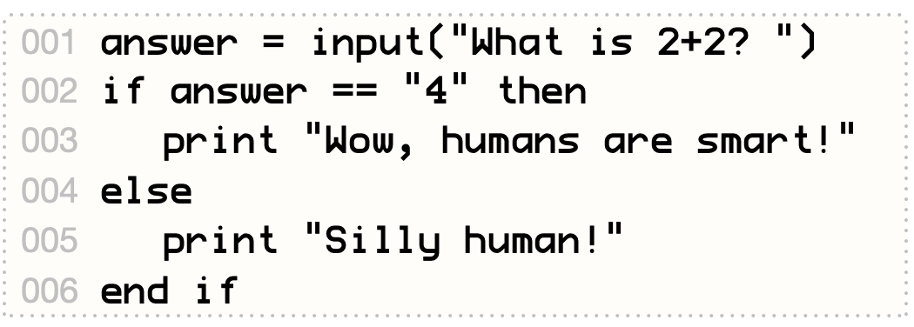

Many computer programs need to do different things depending on some value entered by the user. This is done with an if statement. Try out this program:
Line 1 asks the user to input an answer. At line 2, the if statement checks whether the answer entered is equal to "4". If it is, the computer goes on to line 3, and then jumps down to the end if on line 6. But if the answer is not equal to "4", then it jumps from line 2 down to the else part on line 5.
You can do other kinds of comparisons, too. See the table above for all the different comparison operators you can use to compare two values.
Run the program several times, trying out different answers!
An if statement can have many parts to deal with different conditions. The first part, after the line with if and then, must always be there. Then you can have any number of else if parts, checking for other conditions. The first of these to match will run its code, skipping the rest. Finally, an else part runs if none of the conditions were true. Which parts do you see in the program above?
A condition can be a simple comparison, or it can be several comparisons joined with and or or.
Add two more else if parts to the program above: if the user enters "S", tell them to stop hissing; and if they enter "O", ask them if they are a ghost!
Here's a fun program that decides if the user is old enough to see a scary movie. (If you don't like its decision, change the conditions — it's your program!)
Because we want to compare numbers, not messages, we convert the user's input into a number using val (as on page 15).